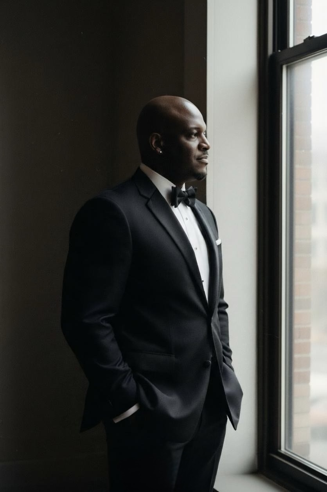

Dante Simpson, Ph.D. is Co-Founder and Former CMO of ESPAT (ESPAT TV, ESPAT Studios and ESPAT Labs) — a career built by crossing luxury fashion, music, finance, gaming and now AI. ESPAT has since been sold; Simpson is no longer affiliated with its current operations.

Dante Simpson has spent two decades moving deliberately between industries that shape culture — and building the connective tissue between them.
An Ohio State University graduate, his path runs through Gucci Group under Tom Ford, Sony BMG, and a stint on the trading floor at the New York Stock Exchange — stops that, by his own account in interviews and profile materials, shaped an eye for brand, an ear for talent, and a discipline for capital that would later define ESPAT. As pocstock put it on naming him to its advisory board, he is "a creative powerhouse whose journey spans fashion, music, gaming, media, finance, and the evolving world of AI." (Employment history is drawn from Simpson's own interviews and public profile and is presented here as reported, pending independent verification.)
In 2019 he co-founded ESPAT Studios with Ed Brooks and Mario Prosperino, setting out to build "a home for premium creatives with a commitment to gaming culture" — a bet that gaming, music, fashion, art, technology and sports were converging into a single audience worth building for. That bet expanded into ESPAT TV, a production and distribution studio, and ESPAT Labs, the ecosystem's AI and technology arm, with Simpson serving as Co-Founder and CMO across the ecosystem through its February 2026 Backboard.io partnership. ESPAT has since been sold, and Simpson is no longer affiliated with its current operations.
He has become a recurring voice on gaming, representation and the business of culture — speaking at GDC's "Play Beyond the Game," the BET Experience gaming panel, and a SXSW-adjacent "Future-Proofing Diversity in Gaming" session. He also holds board and advisory roles across pocstock, Path Intelligence, MMCA, and Benson Petroleum.
Since 2024 he has also hosted The Table, a FINTECH.TV interview show taped live on the New York Stock Exchange floor — sitting down with founders, executives and entertainers including Hannah Bronfman, Mario Van Peebles, Kenya Moore, and Earn Your Leisure's Troy Millings and Rashad Bilal.
How cross-sector marketers are driving growth and innovation in interactive entertainment — a Game Developers Conference session.
Panel on finding opportunity and representation in a billion-dollar industry, alongside cXmmunity Media, Wondr Nation and Team Liquid.
A session addressing representation and long-term diversity strategy across the gaming industry.